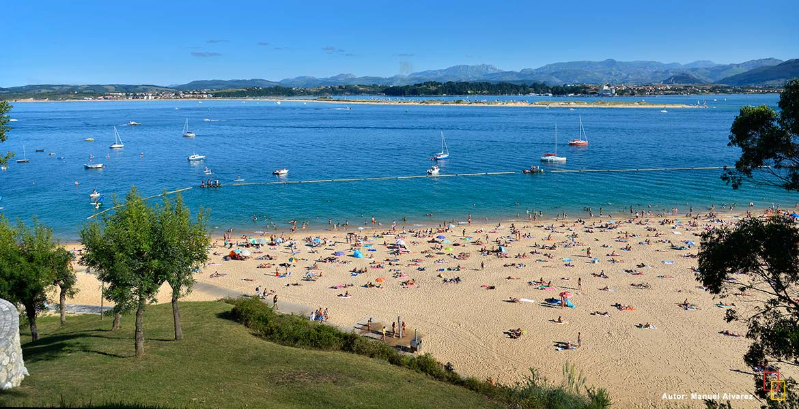

Peligros
Playa de los Peligros is a popular beach located in Santander, Cantabria. Known for its beautiful golden sand and calm waters, it is an ideal spot for swimming and sunbathing.
The beach is easily accessible from the city center and has a lively atmosphere, especially during the summer months. It is surrounded by a promenade with restaurants, bars, and shops, making it a perfect place to relax and enjoy the coastal views.
It also offers beautiful scenery, with views of the city and the nearby peninsula, making it a favorite for both locals and tourists.
